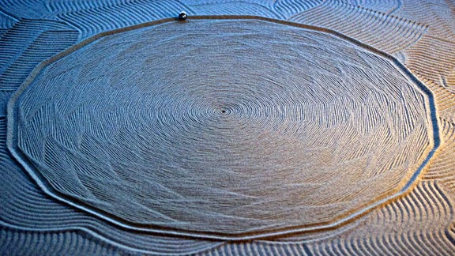

Jean-Pierre Hébert
Jean-Pierre Hébert
 Jean-Pierre Hébert has had a major influence in the world of computerized drawing as well as algorithmic art. From 1959 to this day Hébert has been using computers to make art. In his works, Hébert takes a simple line and turns it into a structure of representation and thought. Hébert’s creations of algorithmic art being displayed in a live performance during a jazz concert and other events has led the way in innovation. His influence is also related to the group he founded called the Algorists. Many artists such as Georg Nees, Frieder Nake, Manfred Mohr, Vera Molnar, and others have been influenced by Jean-Pierre Hébert. From Jean-Pierre Hébert’s works on paper, in air, water, and on sand, he is truly the founding father of algorithmic art and will continue to have a lasting impact in the world of art.
Jean-Pierre Hébert's sand influence through the Kinetic Art Table.